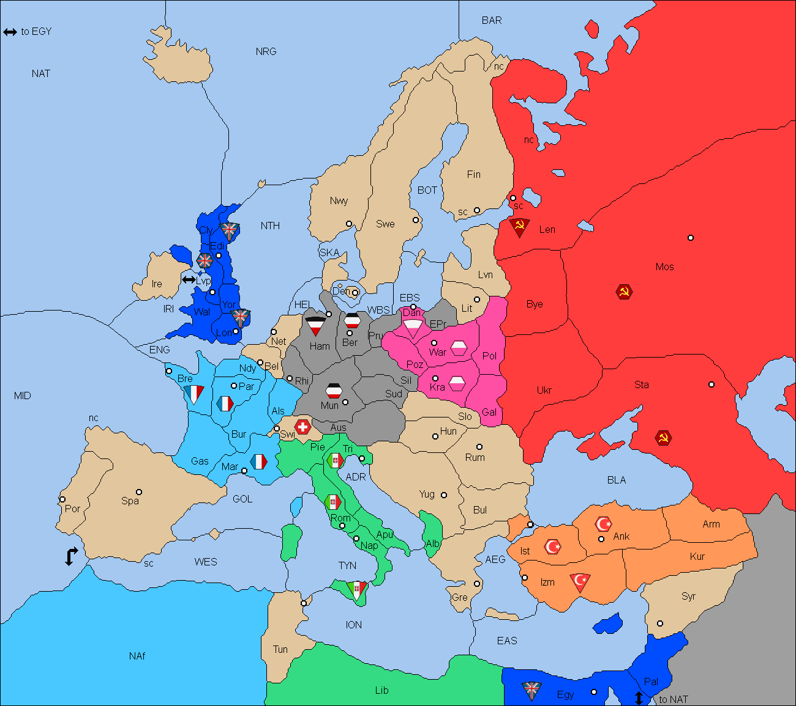

|
I would like to briefly introduce Legacy of Versailles, a Diplomacy variant of mine set in Europe right after the German conquest of Czechoslovakia. Inspired mainly by the setting of Martin Kennedy's Versailles variant, Legacy of Versailles pushes ten years forwards to 1939, at a time when the peace-loving "Spirit of Locarno" has mostly died out, and agressive expansionism may threaten to upturn the European concert once again.

The map has 39 supply centers, out of which 14 are needed to win. The 1/3 criteria is to incentivize victories and careful remanagement of the board's balance of power, mimicking the shifting allegiances of the era. The criteria should make for a more dynamic game that avoids the stalemates commonly seem in Diplomacy's endgames.
A few provinces have special connections: Istambul, Hamburg and Denmark are considered canal provinces; units can cross Ireland towards Liverpool; movement is freely allowed between North Africa and Spain through Gibraltar; the Suez Canal allows voyages between Egypt and the North Atlantic Ocean (representing British sea routes between the home isles and its African empire). The latter's main objective is allowing Britain the ability to reinforce Egypt should it be needed, and removes some of Turkey's natural diplomatic isolation due to its corner position (a position that is not very different from the setup seen in Allan Calhamer's map). To represent its legendary neutrality and yet provide a passable lane in Central Europe, Switzerland starts the game with a neutral army. This army cannot move nor support, and must be disbanded if forced to retreat. Despite being very similar to the Classic map in structure, this variant hopefully still presents historical challenges akin to those found by Europe's diplomats in 1939. The Balkans continue being a powderkeg: Germany may seek Hungary's allegiance; Italy will want to push its claims over Yugoslavia and Greece, the latter also being disputed by Turkey; Poland and the Soviet Union can battle for the ownership of Rumania. In the Low Countries, Germany is a step ahead to blitzkrieg the area, though British or French opposition may revert the situation; Scandinavia is disputed between Britain, Germany and the Soviet Union, with Poland presenting itself as a key regional player in settling the fate of the north; the Iberian Peninsula lies safely within the French sphere of influence, yet may suffer from Italian ambitions over the Mediterranean. Finally, Africa can become a battleground for skirmishes around Tunisia, a colony claimed by both France and Italy across the last decades; Britain will seek a settlement over Syria, and Turkey may have a strong voice on it. Hopefully Legacy of Versailles will present a fun challenge for diplomats and generals of all types, as empires clash over yet another great war. Keep an eye out for the variant's upcoming release on vDiplomacy.com.
If you wish to e-mail feedback on this article to the author, and clicking
on the envelope above does not work for you, feel free to use the
|